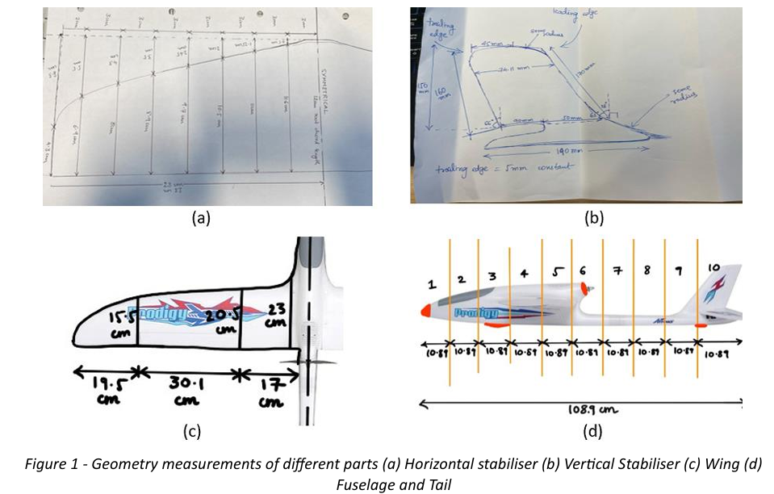
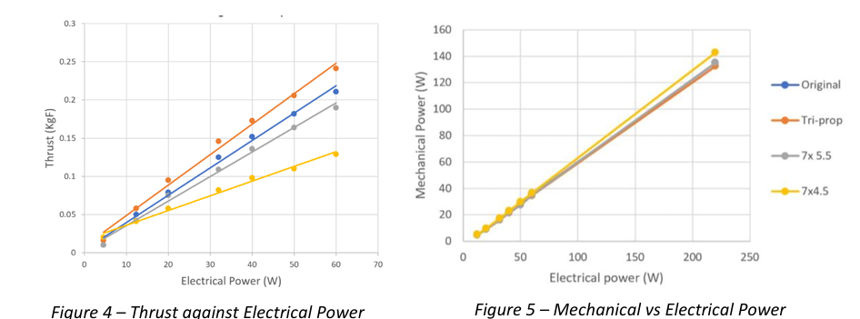
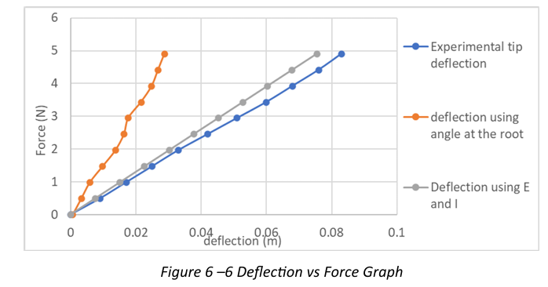
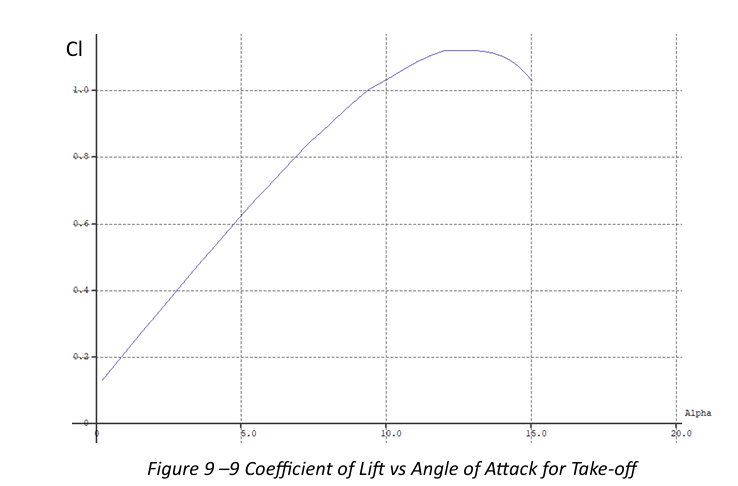
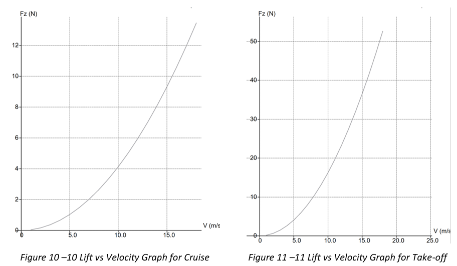
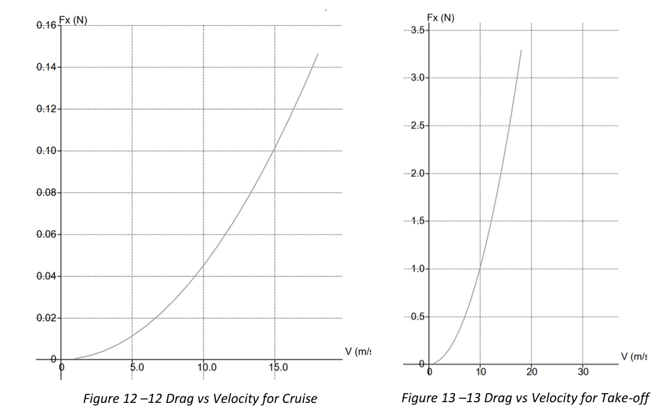
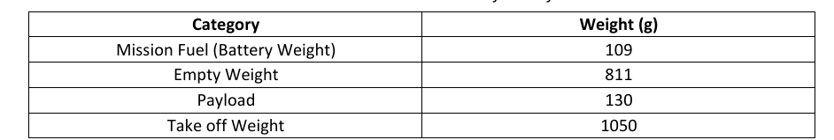
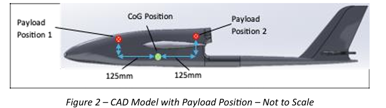
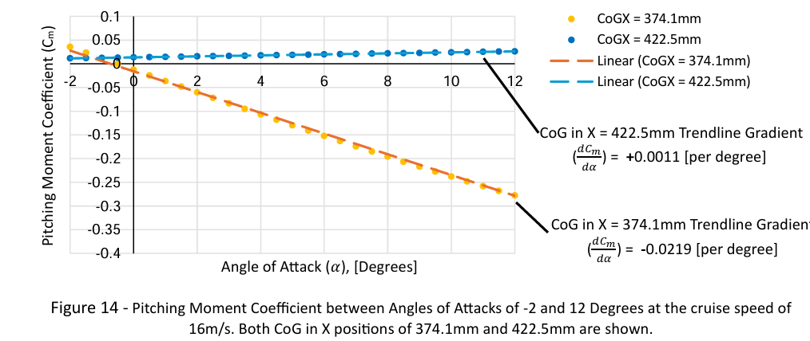

Project Overview
A six-person team project (Team 7) to modify an Arrows Prodigy 1400mm UAV so it could take off, complete a 10 km cruise, hold a three-minute loiter phase, and complete a belly landing while carrying the maximum payload possible. The work spanned a full semester of lab-based investigation across geometry, centre of gravity, aerodynamics, stability, propulsion, and structures.
My contribution centred on the CAD/geometry workstream: reverse-engineering the physical UAV by hand-measuring every part, then modelling the tail (horizontal and vertical stabiliser) in SolidWorks, while the fuselage was modelled by a teammate. I also led the final assembly, remodelling the structure for a cleaner, more accurate model, and used the completed CAD model to determine the centre of gravity, which I then validated against the physical aircraft. On the aerodynamics side, I supported a teammate who ran the XFLR5 simulations by reviewing the results for consistency rather than running the analysis myself. The final report and peer assessment (full marks across all four contribution criteria) reflect this share of the group's work.
Technical Approach
Geometry, weight & payload placement
- Measured every aircraft component by hand (tracing, spring callipers for aerofoil sections) and built a fully dimensioned SolidWorks CAD model, validating it by comparing its calculated centre of gravity (CoG) against experimental measurements taken on a test rig and cross-checked by balancing the aircraft on a ruler
- Used the CAD model to test candidate payload locations, ruling out placing the full 130g payload at the CoG once it became clear that location was inaccessible without compromising the fuselage's structural integrity
- Split the payload into two 65g loads mounted 125mm either side of the CoG, keeping the horizontal CoG shift to just 1mm and remaining within the 70–80mm (from wing leading edge) range specified in the aircraft's operating manual

Propulsion & structures
- Bench-tested four propeller options (the stock 7-inch, two alternative pitches, and a tri-blade) for thrust and mechanical efficiency, selecting the tri-propeller for its higher thrust output despite a small efficiency trade-off, since it could still be run at lower electrical power
- Validated the wing's structural performance experimentally, applying incremental tip loading up to 500g against a fixed root, and compared the measured deflection to a theoretical beam calculation using literature values for Young's modulus, reaching agreement within 9.1%
- Cross-checked the simplified point-load structural test against a finite element model with a distributed pressure load across the full span, confirming the wing remained within a safe factor of safety (2.3, against a 1.5 aerospace standard) under maximum load factor


Aerodynamics & stability
- Modelled the full aircraft in XFLR5 using aerofoils measured from the physical wing and stabilisers, generating lift/drag polars for cruise and take-off configurations and identifying the buffet-onset angle of attack to avoid stall
- Fed the resulting lift, drag, and stall-speed data back into the team's constraint diagram, iterating the feasible design space and payload mass as more accurate propulsion and aerodynamic data became available
- Ran an XFLR5 stability analysis with the payload modelled as a point load at the updated CoG, tracking the pitching-moment gradient with angle of attack to confirm static longitudinal stability and locate the neutral point



Results & Analysis
The finished aircraft carried a 130g payload at a 1,050g take-off weight, cruising at 16 m/s and 96 m altitude for a 10 km range plus a 3-minute loiter, all within CAA regulatory limits.


The CoG in X moved from 375.1mm to 374.1mm after payload addition, a 1mm shift that stayed comfortably within the manual's recommended range and in front of the 386mm centre-of-pressure position, confirming static longitudinal stability. The vertical CoG rose by 24.1mm, a deliberate trade-off since the aircraft's stability is far more sensitive to CoG position in the longitudinal direction, and the wing's 2° dihedral angle was judged sufficient to offset the reduced lateral stability this caused.
The XFLR5 stability analysis confirmed a negative pitching-moment gradient (−0.0219 per degree) at the operating CoG, with the neutral point located 48.4mm further aft, a healthy static margin. Structurally, the wing's maximum stressed state under the worst-case load factor sat at a factor of safety of 2.3, above the 1.5 standard used in aerospace design. A full mission-energy budget showed take-off, climb, cruise, loiter, and descent consuming roughly a third of the available battery energy, leaving comfortable margin for systems not explicitly modelled (taxi, servo actuation, radio control).

Challenges & solutions
The measured propeller efficiency (0.67) came in lower than the team's initial estimate (0.8), which shrank the feasible design space in the constraint diagram and pushed the achievable payload down from earlier estimates. Rather than treat this as a setback, the team fed the real bench-test data back into the constraint diagram immediately, updating stall speed, lift/drag coefficients, and landing distance together so the final payload figure reflected measured performance rather than optimistic assumptions.
Key learnings
The project reinforced how tightly coupled aircraft design variables are in practice: moving the payload shifts the CoG, which changes the stability margin, which constrains where the payload can go in the first place. Working through that loop as a team, backed by experimental validation at each stage (CoG rig, tip-load testing, propeller bench tests), gave much more confidence in the final specification than relying on any single analytical model alone.